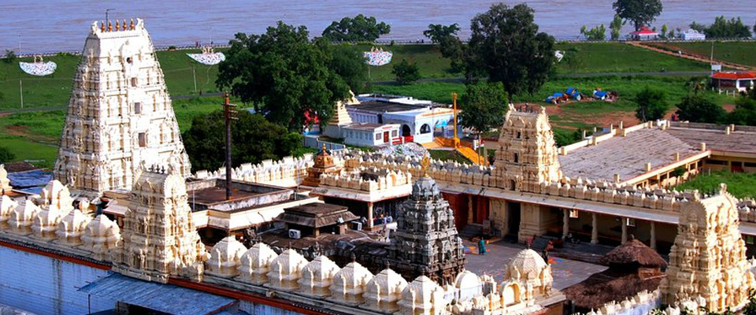

<div class="container-fluid four">
    <div class="row">
        <div class="col-xs-12 col-sm-12 col-md-12 col-lg-12">

            <h1>Rajahmundry To Bhadrachalam 1 Day Tour Package</h1>
            
            <h6>Bhadrachalam Temple</h6>
            
            <div class="price4">
                <h3>Adult : Rs.1600/-(A/C)</h3>
                <h3>Child  : Rs.1400/- (A/C)</h3>
                <h3>Child Age limit : 5 to 10 Years</h3>

                <h4>Reporting Place:</h4>
                <h5>Punnami Tours & Travels
                    Time: 7.00 AM, Near Titan Watch Showroom, Godavari Bund Road, Rajahmundry.</h5>
            </div>

            <div class="schedule4">

                <h2>Tour Schedule:</h2>
                <p>Starts everyday at 7 am. From rajahmundry.
                </p>
                <p>Rajahmundry to Purushothapatnam boat point by road ( 1 hour ).</p>
                <p>Polavaram project site, Gandipochamma Temple, Papikondalu, Perantapalli temple
                    (visiting places )</p>
                <p> Breakfast & Veg- lunch will be provided in the boat.</p>
                <p>A/C boat to non A/C boat shifting at Perantapalli Temple at 3 pm.</p>
                <p>Perantapalli to Pochavaram in non a/c boat (1 hour ).</p>
                <p>Pochavaram to Bhadrachalam temple 2 hours by road on our vehicles.</p>
                <p>Finally reaching Bhadrachalam temple at 7 pm. (Bhadrachalam temple darshan closing
                    Time at 9.00pm )</p>
                
                
                 <button class="btn btn-primary" routerLink='/Booknow'>Book Now</button>


                </div>


        </div>
            </div>
            </div>
            